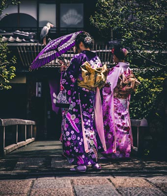
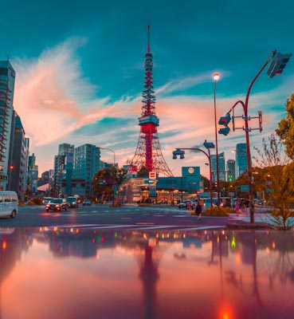
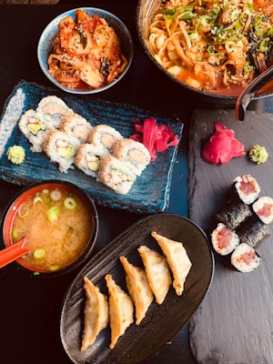

Icône du Japon, le mont Fuji en est aussi le point culminant.
Cette montagne volcanique en forme de cône parfait, est une destination
phare pour les touristes. Au-delà de la vue du mont par lui-même et de
son escalade, se déploie à sa base une grande région de lacs, de grands plateaux,
d’importantes cascades et de grottes qui offrent de somptueux paysages naturels.
Assez près Tokyo, cette belle région des Cinq Lacs est un endroit apprécié
pour y passer des week-ends et des vacances de détente

Geisha:
Le métier de geisha, officiellement reconnu dans la seconde partie du XVIIIe siècle,
désigne des femmes qui vouent leurs vies aux arts traditionnels japonais et mettent à profit leurs
talents pour divertir des clients de marque à l’occasion de banquets ou de spectacles.
Les geisha ont longtemps incarné le comble du raffinement et sont sans conteste
gardiennes de la culture et des traditions japonaises. Aujourd’hui encore, elles
sont très respectées et des clients de marque dépensent toujours des sommes astronomiques
pour jouir de leur compagnie,
le plus souvent dans des ochaya, des maisons de thés.

Tour de Tokyo
La Tour de Tokyo est une tour japonaise de radiodiffusion,
inaugurée en 1958 à l'image de la Tour Eiffel, dans
l'arrondissement de Minato au sud de la capitale.
Elle est l'une des plus hautes tour en métal du monde, avec un point culminant à 333 mètres
et deux observatoires sur la ville. Reconnaissable à ses couleurs rouges
et blanches, elle s'illumine la nuit selon les saisons
et évènements.

Tokyo et food
Quand nous pensons à la nourriture japonaise,
nous avons tendance à se référer uniquement aux sushis ou
aux recettes de ramen. En réalité, Tokyo a davantage de restaurants
étoilés au Michelin que n’importe quelle autre ville du monde, et Osaka
a tendance à créer de nouveaux mots pour décrire son amour pour la nourriture.
Donc je pense qu’il est assez juste de dire que le Japon est la capitale culinaire du monde
! L’une des raisons à l’extraordinaire cuisine du pays est le fait que ses traditions
culinaires s’articulent autour de l’unami – votre cinquième sens. Umani signifie
« goût agréablement savoureux » et est la raison (scientifique)
expliquant pourquoi tout le monde (ou presque) est fan de bacon